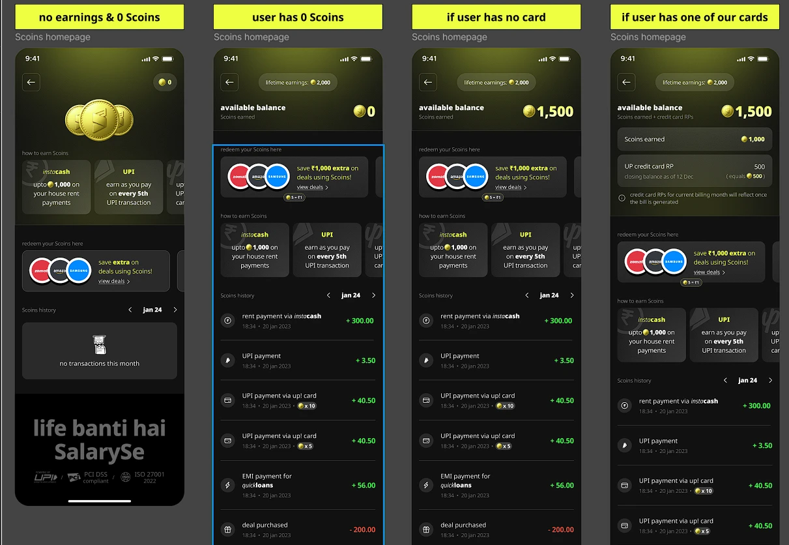

<!doctype html>
<html lang="en">
<head>
<meta charset="utf-8" />
<title>Scoins Redesign Decisions</title>
<link rel="preconnect" href="https://fonts.googleapis.com" />
<link rel="preconnect" href="https://fonts.gstatic.com" crossorigin />
<link href="https://fonts.googleapis.com/css2?family=Noto+Sans:wght@400;500;600;700&family=Gochi+Hand&display=swap" rel="stylesheet" />
<style>
  /* A4 landscape at 96 dpi. Light paper, dark phone screens, hand-written notes beside them. */
  :root { --paper: #F7F6F2; --ink: #17171A; --ink2: #55575E; --note: #6C6C70; --gold: #B98A2F; --line: #E2E0DA; }
  @page { size: 1123px 794px; margin: 0; }
  * { box-sizing: border-box; }
  html, body { margin: 0; background: #DDD; font-family: 'Noto Sans', system-ui, sans-serif; color: var(--ink); }
  .page { width: 1123px; height: 794px; background: var(--paper); position: relative; overflow: hidden; page-break-after: always; margin: 0 auto 24px; }
  .head { position: absolute; left: 56px; top: 40px; right: 56px; display: flex; justify-content: space-between; align-items: baseline; }
  .eyebrow { font-size: 12px; font-weight: 600; color: var(--gold); }
  .title { font-size: 26px; font-weight: 700; letter-spacing: -0.01em; margin: 4px 0 0; max-width: 760px; text-wrap: balance; }
  .folio { font-size: 12px; color: var(--ink2); }
  .phone { position: absolute; border-radius: 30px; overflow: hidden; box-shadow: 0 18px 40px rgba(0,0,0,0.18), 0 0 0 1px rgba(0,0,0,0.06); background: #0C0C0D; }
  .phone img { display: block; width: 100%; }
  .note { position: absolute; width: 250px; font-family: 'Gochi Hand', cursive; font-size: 19px; line-height: 1.15; color: var(--note); }
  .note.l { text-align: right; }
  svg.arrows { position: absolute; inset: 0; pointer-events: none; }
  .body { position: absolute; left: 56px; right: 56px; top: 130px; bottom: 50px; }
  .cols { display: grid; grid-template-columns: 1fr 1fr; gap: 40px; }
  p, li { font-size: 14px; line-height: 1.55; color: var(--ink2); }
  h3 { font-size: 15px; margin: 0 0 6px; color: var(--ink); }
  ol, ul { margin: 0; padding-left: 20px; }
  li { margin-bottom: 6px; }
  strong { color: var(--ink); font-weight: 600; }
  .caption { position: absolute; width: 210px; font-size: 12.5px; line-height: 1.45; color: var(--ink2); }
  .caption b { display: block; color: var(--ink); font-size: 13.5px; margin-bottom: 2px; }
  table { width: 100%; border-collapse: collapse; font-size: 11.5px; }
  th { text-align: left; font-weight: 600; color: var(--ink); border-bottom: 1.5px solid var(--ink); padding: 6px 8px 6px 0; }
  td { vertical-align: top; color: var(--ink2); border-bottom: 1px solid var(--line); padding: 6px 8px 6px 0; line-height: 1.4; }
  td:first-child { color: var(--ink); font-weight: 500; width: 20%; }
  .tag { display: inline-block; font-size: 10px; font-weight: 600; color: var(--gold); border: 1px solid #E5D2A6; border-radius: 99px; padding: 0 6px; margin-left: 4px; }
  .big { font-size: 44px; font-weight: 700; letter-spacing: -0.02em; line-height: 1.05; margin: 0; max-width: 520px; }
  .rule { height: 1px; background: var(--line); margin: 18px 0; }
</style>
</head>
<body>
<div id="doc"></div>
<script>
// Each annotated page: a phone image (optionally a vertical crop of a long screen) and notes
// pointing at coordinates in the screen's own 390-px-wide space.
const S = (n) => `screens/${n}`
const pages = [
  { kind: 'cover' },
  { kind: 'problem' },
  { kind: 'principles' },
  {
    eyebrow: 'Wallet · top of screen', title: 'Rupees first, with the better choice as the default',
    img: 'wallet-active-fold.png', y0: 0, y1: 844,
    notes: [
      ['l', 'Light falls from above: one soft beam and engraved rings, faded before the cards begin', 200, 70],
      ['l', 'Lead with the money: ₹300 is the headline, Scoins sit above it as the unit', 195, 258],
      ['l', 'Keep the alternative visible. Bank value lives in one pill, a tap from the rate explainer', 195, 332],
      ['r', 'Real 3D coins: drag to spin, tap to flip. They never cover the number', 230, 150],
      ['r', 'Four identical actions. Only Spend is gold: the 2× choice is the default', 62, 405],
      ['r', 'One row says what to do next, what it is worth and how close you are', 300, 520],
    ],
  },
  {
    eyebrow: 'Wallet · lower half', title: 'Every explanation ends in an action',
    img: 'wallet-active.png', y0: 690, y1: 1700,
    notes: [
      ['l', 'Deals ranked by what the balance covers. Out-of-reach ones say how many more Scoins', 100, 790],
      ['l', 'Calculator ends in a button that carries the amount into the flow', 300, 1375],
      ['r', '2× is a calm badge, not a warning. Bank mode shows the in-app value as information', 270, 1330],
      ['r', 'Rupees lead, Scoins follow. Redemptions read “Saved ₹50”, never a red minus', 320, 1540],
      ['l', 'Section order follows intent: earn, then spend, then explore, then the record', 60, 1465],
    ],
  },
  { kind: 'intro' },
  { kind: 'states' },
  {
    eyebrow: 'Earn · ways to earn today', title: 'Show what earns, how much, and the next step',
    img: 'earn-active.png', y0: 0, y1: 980,
    notes: [
      ['l', 'Illustrations rendered in the Scoin’s own gold so the screen feels like one world', 70, 270],
      ['r', 'Every card answers: the action, the Scoins and their ₹ value, the limits, the next step', 200, 250],
      ['r', 'Progress only where a rule has one', 330, 340],
      ['l', 'Real product rules only. Anything we do not know stays unstated', 110, 610],
      ['r', 'One button per card, and it does one thing', 120, 455],
    ],
  },
  {
    eyebrow: 'Earn · proposed mechanics', title: 'Propose habits worth rewarding, and label them as proposals',
    img: 'earn-active.png', y0: 940, y1: 2150,
    notes: [
      ['r', 'Campaigns show a pending reward or “Notify me”, never an empty slot', 300, 1000],
      ['l', 'Card benefit is one line for non-holders. The wallet is not an ad', 120, 1240],
      ['r', 'Proposals are marked, greyed and illustrative, so nothing reads as a live offer', 330, 1440],
      ['l', 'Reward punctuality and recurring habits, never borrowing or spending more', 110, 1450],
      ['r', 'Caps and one-time rewards stop gaming', 250, 1980],
    ],
  },
  { kind: 'spend' },
  { kind: 'withdraw' },
  { kind: 'model' },
  { kind: 'guardrails' },
]

const W = 1123, H = 794
const doc = document.getElementById('doc')
let folio = 0
const head = (eyebrow, title) => `<div class="head"><div><div class="eyebrow">${eyebrow}</div><h1 class="title">${title}</h1></div><div class="folio">${String(++folio).padStart(2, '0')}</div></div>`

function annotated(pg) {
  const el = document.createElement('section')
  el.className = 'page'
  const cropH = pg.y1 - pg.y0
  const maxH = 600, maxW = 330
  const scale = Math.min(maxH / cropH, maxW / 390)
  const pw = 390 * scale, ph = cropH * scale
  const px = (W - pw) / 2, py = 150 + (maxH - ph) / 2
  el.innerHTML = head(pg.eyebrow, pg.title) +
    `<div class="phone" style="left:${px}px;top:${py}px;width:${pw}px;height:${ph}px"></div>`
  const svg = document.createElementNS('http://www.w3.org/2000/svg', 'svg')
  svg.setAttribute('class', 'arrows'); svg.setAttribute('viewBox', `0 0 ${W} ${H}`)
  const used = { l: [], r: [] }
  pg.notes.forEach(([side, text, sx, sy]) => {
    const tx = px + sx * scale, ty = py + (sy - pg.y0) * scale
    let ny = Math.max(150, Math.min(H - 110, ty - 22))
    for (const u of used[side]) if (Math.abs(u - ny) < 86) ny = u + 86
    used[side].push(ny)
    const nx = side === 'l' ? px - 330 : px + pw + 80
    const n = document.createElement('div')
    n.className = `note ${side}`; n.style.left = nx + 'px'; n.style.top = ny + 'px'; n.textContent = text
    el.appendChild(n)
    const ax = side === 'l' ? nx + 262 : nx - 12, ay = ny + 18
    const mx = (ax + tx) / 2
    const path = document.createElementNS('http://www.w3.org/2000/svg', 'path')
    path.setAttribute('d', `M${ax},${ay} C${mx},${ay} ${mx},${ty} ${tx},${ty}`)
    path.setAttribute('fill', 'none'); path.setAttribute('stroke', '#8A8A8E'); path.setAttribute('stroke-width', '1.6'); path.setAttribute('stroke-linecap', 'round')
    svg.appendChild(path)
    const dot = document.createElementNS('http://www.w3.org/2000/svg', 'circle')
    dot.setAttribute('cx', tx); dot.setAttribute('cy', ty); dot.setAttribute('r', '3.2'); dot.setAttribute('fill', '#B98A2F')
    svg.appendChild(dot)
  })
  el.appendChild(svg)
  return el
}

function strip(eyebrow, title, items, intro) {
  const el = document.createElement('section'); el.className = 'page'
  const n = items.length, gap = 26, w = Math.min(205, (W - 112 - gap * (n - 1)) / n), h = w * 844 / 390
  const total = n * w + (n - 1) * gap, x0 = (W - total) / 2, y = 150
  el.innerHTML = head(eyebrow, title) + items.map((it, i) => `
    <div class="phone" style="left:${x0 + i * (w + gap)}px;top:${y}px;width:${w}px;height:${h}px;border-radius:22px"></div>
    <div class="caption" style="left:${x0 + i * (w + gap)}px;top:${y + h + 14}px;width:${w}px"><b>${it.title}</b>${it.text}</div>`).join('') +
    (intro ? `<p style="position:absolute;left:56px;right:56px;top:104px;margin:0">${intro}</p>` : '')
  return el
}

function textPage(eyebrow, title, html) {
  const el = document.createElement('section'); el.className = 'page'
  el.innerHTML = head(eyebrow, title) + `<div class="body">${html}</div>`
  return el
}

for (const pg of pages) {
  if (pg.img) { doc.appendChild(annotated(pg)); continue }
  if (pg.kind === 'cover') {
    const el = document.createElement('section'); el.className = 'page'
    el.innerHTML = `
      <div style="position:absolute;left:64px;top:96px;width:470px">
        <div class="eyebrow">SalarySe · Product design challenge</div>
        <h1 class="big" style="margin-top:14px">Make Scoins feel like money</h1>
        <p style="font-size:16px;margin-top:18px">Design decisions behind the Scoins wallet, the Earn experience and the redemption flows: what each screen says, and why it says it that way.</p>
        <div class="rule"></div>
        <p style="margin:0"><strong>The lever:</strong> 5 Scoins = ₹1 spent on SalarySe, 10 Scoins = ₹1 to bank. Spending in-app is worth 2×, and almost nobody knew.</p>
        <p style="margin-top:10px"><strong>The answer:</strong> lead with rupees, make the better rate the default without hiding the other, and give every state a next step.</p>
      </div>
      ${['wallet-active-fold.png', 'earn-active.png', 'withdraw-success-confetti.png'].map((n, i) => `<div class="phone" style="left:${590 + i * 168}px;top:${110 + (i % 2) * 40}px;width:160px;height:346px;border-radius:20px"></div>`).join('')}
      <p style="position:absolute;left:64px;bottom:40px;font-size:12px;margin:0">Interactive prototype: claude.ai/artifact/VrxVM3azJxau7ZQbx6ibTs · All earn amounts, deals and card figures are illustrative.</p>`
    doc.appendChild(el); folio++; continue
  }
  if (pg.kind === 'problem') {
    const el = textPage('Deliverable 1 · Problem analysis', 'Why Scoins feel useless today', `
      <div class="cols" style="grid-template-columns: 1.05fr 1fr">
        <div>
          <p style="margin-top:0">A Scoin balance is a number with no meaning. The wallet never says what 1,500 Scoins are worth, offers no Spend, Withdraw or Earn action, and leaves a zero balance as a decorative coin over an empty list. The one fact that would change behaviour, that Scoins are worth 2× inside SalarySe, appears only in a cash-out popup with guilt copy, after the user has decided to leave.</p>
          <h3 style="margin-top:14px">What I found beyond the brief</h3>
          <ul>
            <li><strong>History looks like rupees.</strong> <code>+300.00</code> with no unit reads as ₹300 arriving. Fractional Scoins make it worse.</li>
            <li><strong>Redeeming is drawn as a loss.</strong> A red minus on the action we want most.</li>
            <li><strong>The balance doesn't reconcile.</strong> Lifetime 2,000, available 0, nothing in between.</li>
            <li><strong>Cardholders get a third currency</strong>, with pending and available blended.</li>
            <li><strong>Earning is tied to credit products</strong>, so mechanics must reward paying on time, never borrowing.</li>
            <li><strong>Deals ignore the balance.</strong> "Save ₹1,000" even at zero.</li>
          </ul>
          <h3 style="margin-top:14px">What I fixed first</h3>
          <ol>
            <li><strong>Trust:</strong> every amount carries its unit and ₹ value; the ledger reconciles.</li>
            <li><strong>Rupee-first value</strong> with the bank value beside it.</li>
            <li><strong>A next step in every state.</strong></li>
          </ol>
        </div>
        <div>
          <div class="phone" style="position:relative;border-radius:14px;width:100%;"></div>
          <p style="font-size:12px;margin-top:8px">Before: the current wallet across its four states.</p>
        </div>
      </div>`)
    doc.appendChild(el); continue
  }
  if (pg.kind === 'principles') {
    doc.appendChild(textPage('Approach', 'Six principles, and the order they put the wallet in', `
      <div class="cols">
        <div>
          <h3>Principles</h3>
          <ol>
            <li><strong>Lead with rupees.</strong> The in-app ₹ value is the headline.</li>
            <li><strong>Show both rates, rank them.</strong> 5 = ₹1 is primary; 10 = ₹1 is always visible, never guilt-framed.</li>
            <li><strong>Every amount carries its unit.</strong> No bare numbers, no decimals on Scoins.</li>
            <li><strong>Spending is saving.</strong> "Saved ₹50", not a red minus.</li>
            <li><strong>The balance always reconciles.</strong> Running balance; pending never mixed into available.</li>
            <li><strong>One next step per state.</strong></li>
          </ol>
        </div>
        <div>
          <h3>Wallet order, top to bottom</h3>
          <ol>
            <li><strong>Balance</strong>: what do I have, in rupees?</li>
            <li><strong>Actions</strong>: Spend, Withdraw, Earn, History.</li>
            <li><strong>Card rewards</strong> (cardholders): where the balance came from.</li>
            <li><strong>Next reward</strong>: the earning habit, kept high.</li>
            <li><strong>Popular deals</strong>: concrete ways to spend.</li>
            <li><strong>Value calculator</strong>: exploration, below the decisions.</li>
            <li><strong>Recent activity</strong>: the record, last.</li>
          </ol>
          <p style="margin-top:12px">Merged: a "Rates" action duplicated the pill and the ⓘ button, so it became History. The value card duplicated the calculator, so it was removed.</p>
        </div>
      </div>`)); continue
  }
  if (pg.kind === 'intro') {
    doc.appendChild(strip('Wallet · entrance', 'A short, real 3D moment that ends in the balance', [
      { img: 'intro-1-closeup.png', title: '0.0s · Close-up', text: 'The camera starts on the embossed S and pulls back in one continuous move.' },
      { img: 'intro-2-edge.png', title: '0.7s · Edge-on', text: 'A full turn shows real thickness and the reeded edge. Real geometry, not a flat image.' },
      { img: 'intro-3-formation.png', title: '1.9s · Formation', text: 'Two coins slide out from behind into the overlap from the reference sheet.' },
      { img: 'intro-4-landed.png', title: '3.0s · Wallet', text: 'One GSAP timeline lands the coins and reveals the UI. Plays once; shorter on repeat; static with reduced motion.' },
    ])); continue
  }
  if (pg.kind === 'states') {
    doc.appendChild(strip('Wallet · states', 'Each state gets its own message and next step', [
      { img: 'wallet-new-fold.png', title: 'New user', text: 'Explains what Scoins are worth and starts a first reward (0 of 5). No empty history.' },
      { img: 'wallet-spent-fold.png', title: 'Spent everything', text: '“Saved ₹400 with Scoins so far” turns zero into proof of value, then points to the next reward.' },
      { img: 'wallet-cardholder-fold.png', title: 'Cardholder', text: 'Balance split by source, with pending card points and when they become spendable.' },
      { img: 'wallet-reward-landed.png', title: 'Reward lands', text: 'The coin turns, the balance counts up and a toast confirms “+10 Scoins · ₹2 to spend”.' },
    ])); continue
  }
  if (pg.kind === 'spend') {
    doc.appendChild(strip('Redemption · spend', 'Review exactly what it costs and saves, then celebrate', [
      { img: 'spend-list.png', title: 'Choose', text: '“You can cover” first, “Almost there” second, each with the Scoins still needed.' },
      { img: 'spend-review.png', title: 'Review', text: 'You save, Scoins used, the rate and the balance after. One button names the exact cost.' },
      { img: 'spend-success.png', title: 'Success', text: 'The exact saving, the Scoins used and what is left, with the voucher or bill outcome.' },
      { img: 'spend-not-enough.png', title: 'Not enough Scoins', text: 'Says exactly how many more are needed and offers a way to earn, not a dead button.' },
    ])); continue
  }
  if (pg.kind === 'withdraw') {
    doc.appendChild(strip('Redemption · withdraw', 'Cash out without guilt, and without hiding the better rate', [
      { img: 'withdraw-amount.png', title: 'Amount', text: '“You’ll receive ₹150” at 10 = ₹1, with “Worth ₹300 on SalarySe” as information.' },
      { img: 'withdraw-review.png', title: 'Review', text: 'Every figure before confirming: rupees, Scoins, rate, account, balance after.' },
      { img: 'withdraw-error.png', title: 'Error', text: 'Plain words, what did not happen (“No Scoins were withdrawn”) and one way forward.' },
      { img: 'withdraw-success-confetti.png', title: 'Requested', text: 'Badge springs in, tick draws, confetti and gold coins burst, the amount counts up. Repeats the exact amount and account.' },
    ])); continue
  }
  if (pg.kind === 'model') {
    const rows = [
      ['Rupee-first balance', 'Planning with Scoins as money', 'Understands worth in seconds', 'Correct ₹ value in tests; wallet → Spend taps'],
      ['Both rates, “2× the bank value”', 'Choosing to spend in-app', 'Twice the value', '% of Scoins spent in-app'],
      ['UPI progress tracker (3 of 5)', 'Repeat eligible UPI payments', 'A short, clear path to a reward', 'Bonus completion; UPI per user per cycle'],
      ['Deals ranked by what the balance covers', 'A first redemption; saving toward a deal', 'No doubt about “is it enough?”', 'First-redemption rate; time to first'],
      ['“Saved ₹400”, lifetime saved', 'Redeeming again', 'Spending feels like gaining', 'Redemptions per active user'],
      ['Calculator → Spend / Withdraw with amount', 'Turning curiosity into action', 'Fewer steps', 'Calculator → redemption conversion'],
      ['Celebration on earn and redeem', 'Noticing and repeating the action', 'Confirmation it landed', 'Repeat earning next cycle'],
      ['Pending vs available card points', 'Using the card without confusion', 'No surprise about points', 'Support contacts on points'],
      ['Neutral withdrawal', 'Withdrawing only when cash is needed', 'Free choice, no guilt', 'Withdrawal share; complaints'],
      ['On-time bills, 3 months <span class="tag">Proposal</span>', 'Paying before the due date', 'Avoids late fees', 'On-time payment rate'],
      ['Autopay setup <span class="tag">Proposal</span>', 'Moving recurring bills to autopay', 'Never misses a bill', 'Autopay adoption; 90-day retention'],
      ['First eligible payment <span class="tag">Proposal</span>', 'Activation', 'Immediate value', 'D7 activation'],
      ['Recurring payments, capped at 3 <span class="tag">Proposal</span>', 'Keeping monthly payments on SalarySe', 'Rewards for what they already pay', 'Recurring payers per month'],
    ]
    doc.appendChild(textPage('Deliverable 3 · Behaviour model', 'Each mechanic, the behaviour it drives and the value it creates', `
      <table><thead><tr><th>Mechanic</th><th>Behaviour it encourages</th><th>Value to the user</th><th>How we'd measure it</th></tr></thead>
      <tbody>${rows.map((r) => `<tr>${r.map((c) => `<td>${c}</td>`).join('')}</tr>`).join('')}</tbody></table>`)); continue
  }
  if (pg.kind === 'guardrails') {
    doc.appendChild(textPage('Guardrails and next steps', 'Reward good money habits, never more borrowing', `
      <div class="cols">
        <div>
          <h3>Guardrails</h3>
          <ul>
            <li>No mechanic rewards borrowing more or spending more for its own sake.</li>
            <li>Streaks reward punctuality, never volume.</li>
            <li>Caps stop gaming: the UPI bonus resets every 5 payments; recurring payments cap at 3.</li>
            <li>Withdrawing is always available and never framed as a loss.</li>
            <li>Every illustrative value is labelled. The two rates are fixed everywhere.</li>
          </ul>
          <h3 style="margin-top:16px">Accessibility and motion</h3>
          <ul>
            <li>Reduced motion: the intro, beam, confetti and celebrations become calm static states.</li>
            <li>One screen-reader announcement once the calculator settles, not one per drag step.</li>
            <li>44px touch targets; keyboard support for the slider and the coins.</li>
          </ul>
        </div>
        <div>
          <h3>What I'd test first</h3>
          <ol>
            <li>Five-second test: “What are your Scoins worth?” Before vs after.</li>
            <li>First-redemption rate with deals ranked by coverage vs a generic list.</li>
            <li>In-app share of Scoins with the side-by-side rates vs the cash-out popup.</li>
          </ol>
          <h3 style="margin-top:16px">Open questions for SalarySe</h3>
          <ul>
            <li>Real earn rates per bill and EMI, and whether Scoins expire.</li>
            <li>Minimum withdrawal and payout timing.</li>
            <li>Partner list and whether deals cover all or part of the price.</li>
          </ul>
        </div>
      </div>`)); continue
  }
}
window.__ready = true
</script>
</body>
</html>
